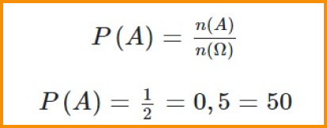

.png)
Probabilidade
Probabilidade é um conceito estatístico relacionado a situações aleatórias.
A probabilidade de um evento é indicada por um número entre 0 e 1, sendo
0 um evento impossível e 1 um evento certo. O cálculo da probabilidade de
um evento é realizado pela razão entre o número de casos favoráveis ao e-
vento e o número de casos possíveis.
.png) Resumo sobre Probabilidade
Resumo sobre Probabilidade
- O estudo da probabilidade é a análise de experimentos aleatórios.
- Espaço amostral é o conjunto formado por todos os resultados possíveis de um experimento aleatório.
- Se todos os resultados têm a mesma chance de ocorrer, o espaço amostral é chamado de equiprovável.
- Evento é um conjunto particular de resultados de um experimento aleatório.
- A probabilidade é sempre um número de 0 a 1.
- A probabilidade de um evento A ocorrer é a razão entre o número de elementos do conjunto A e o número de elementos do espaço amostral:
O QUE É
Probabilidade é a chance de obter determinado resultado em um experimento. Fundamentos probabilísticos são utilizados na análise de experimentos e situações aleatórias e podem contribuir para tomadas de decisões em diferentes contextos.
Para desenvolver o estudo da probabilidade, precisamos compreender alguns conceitos básicos.
Ponto amostral na Probabilidade
Considere uma situação ou experimento que pode produzir diferentes resultados cada
vez que ocorrer (ou seja, um experimento aleatório). Cada resultado particular é chamado
de ponto amostral.
Exemplo:A face superior resultante do lançamento de um dado é um experimento alea-
tório. Cada face é um ponto amostral.
Espaço amostral na Probabilidade
Espaço amostral é o conjunto de todos os possíveis resultados de um experimento. Esse conjunto é frequentemente expresso pela letra grega maiúscula Ômega: Ω .
Exemplo: A face superior resultante do lançamento de um dado de 6 faces pode ser o número 1, 2, 3, 4, 5 ou 6. Logo, nesse experimento, Ω= {1,2,3,4,5,6}.
Espaço amostral Equiparável
Um espaço amostral é chamado de equiprovável se todos os resultados possuem a mesma chance de acontecerem.
Exemplo:Ao lançar um dado comum (também chamado de “não viciado”) de 6 faces, a chance de obter, na face superior, o número 1 é a mesma de obter o número 2, que é a mesma de obter o número 3 e assim por diante. Portanto, o espaço amostral Ω={1,2,3,4,5,6} é equiprovável."
TIPOS
Existem diferentes concepções acerca do estudo de probabilidade.
A probabilidade clássica supõe um espaço amostral equiprovável para o cálculo de probabilidades.
A probabilidade empírica (ou frequentista) considera que o cálculo de probabilidade deve ser realizado a partir de repetições do experimento e análise dos resultados.
A probabilidade subjetiva se baseia em ideias, crenças e julgamentos pessoais. Consequentemente, o cálculo de probabilidade em determinado contexto pode variar de uma pessoa para outra.
Observação: Nos exemplos deste texto, trataremos de situações relacionadas à probabilidade clássica.
EVENTO
Um evento é um conjunto específico de resultados e geralmente é representado por uma letra maiúscula. Considere o experimento de lançar um dado de 6 faces e observar a face superior. Exemplos de eventos são:
A = Obter um número ímpar.
B = Obter um número par.
C = {1,2} (Obter o número 1 ou o número 2.).
D = {1, 2, 3, 4, 5, 6} (Obter um número de 1 a 6.).
E = {7} (Obter o número 7).
Note que os eventos A, B, C e D são subconjuntos do espaço amostral (o evento D, inclusive, é igual ao espaço amostral).
Assim, os eventos A, B e C são eventos possíveis e o evento D é um evento certo, pois com certeza a face obtida será um número de 1 a 6. Já o evento E é chamado de evento impossível, pois não podemos obter o número 7 ao lançar um dado de 6 faces.
FÓRMULA
Agora que conhecemos esses conceitos fundamentais, podemos seguir com o cálculo básico de probabilidade. Vamos representar a probabilidade de um evento A acontecer por P(A).
A probabilidade de um evento A ocorrer a partir de um experimento é a razão entre o número de casos favoráveis a esse evento e o número total de casos possíveis. Isso significa, respectivamente, a razão entre o número de elementos do conjunto A e o número de elementos do espaço amostral do experimento.
- P(A) →probabilidade do evento A ocorrer.
- n(A) →número de elementos do conjunto A, ou seja, a quantidade pontos amostrais favoráveis à ocorrência de A.
- n(Ω ) →número de elementos do espaço amostral.
COMO CALCULAR
Para calcular a probabilidade de um evento, devemos determinar o número de casos favoráveis à sua ocorrência e o número de casos possíveis para aplicar a fórmula.
Exemplo:Qual a probabilidade de obter a face “cara” no lançamento de uma moeda?
Seja A o evento de obter a face “cara” no lançamento de um moeda. Há dois possíveis resultados para o lançamento de moeda: “cara” ou “coroa”. Assim, Ω= {cara,coroa}, ou seja, o número de elementos do espaço amostral é 2. Ainda, o número de casos favoráveis ao evento A é 1, que é o resultado “cara”.
Para melhorar seus estudos...
Matemática pode ser um conteúdo difícil. Para aumentar seu aprendizado, acesse ao mapa mental e a playlist de vídeo aulas sobre este assunto:
Mapa mental playlist de videoaulas